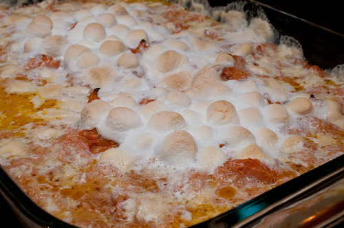

Decadent Sweet Potatoe Marshmallow Casserole

Description
The perfect end to a perfect meal! This dessert dish will end the day on a high note! Just remember to
make enough to have leftovers, because you'll be craving it the next day, too!
Ingredients
- 2 sticks of butter
- A bundle of sweet potatoes
- A bag of marshmallows
- Milk
- Sugar
Directions
- Preheat oven to 300°
- Boil whole sweet potatoes until tender
- Place boiled sweet potatoes into bowl for mixing
- Mash sweet potatoes
- Pour 1 cup of milk and 2 cups of sugar into mash bowl
- Continue to mash with milk and sugar until soft
- Microwave 1 stick of butter until liquid
- Pour butter into mash and stir
- Move mash from bowl to casserole dish and spread even
- Place marshmallows on top of mash (Get Creative! A smiley face will brighten the dish!)
- Place in oven to bake for 15 minutes
- Best served hot!
- If you remembered to make extra, just reheat leftovers in microwave the next day!
- Yum!
Previous Dish
Return to Main Page